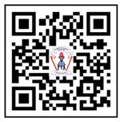

Introduction
Introduction
The Writing Pupil’s Book Standard One textbook has been prepared based on the 2023 Primary Education Syllabus, Standard I-II, by the Ministry of Education, Science and Technology. It is a revised edition of Writing Standard One Pupil’s Book that was published in 2019 in accordance with the 2016 Basic Education Syllabus for Standard One issued by the Ministry of Education, Science and Technology.
The book aims to enable the child to build writing competences by performing different learning activities through the following areas: drawing sketches of different pictures, objects and shapes; writing or finger spelling vowels in lowercase and uppercase letters; writing or finger spelling consonant letters in lowercase and uppercase letters; writing or signing words; and writing or signing sentences.
In addition, the textbook is designed to emphasise teaching and learning how to write or finger spell letters, and how to write or sign words and sentences, using different digital sources.
Learn more through online library
https://ol.tie.go.tz/video

Tanzania Institute of Education